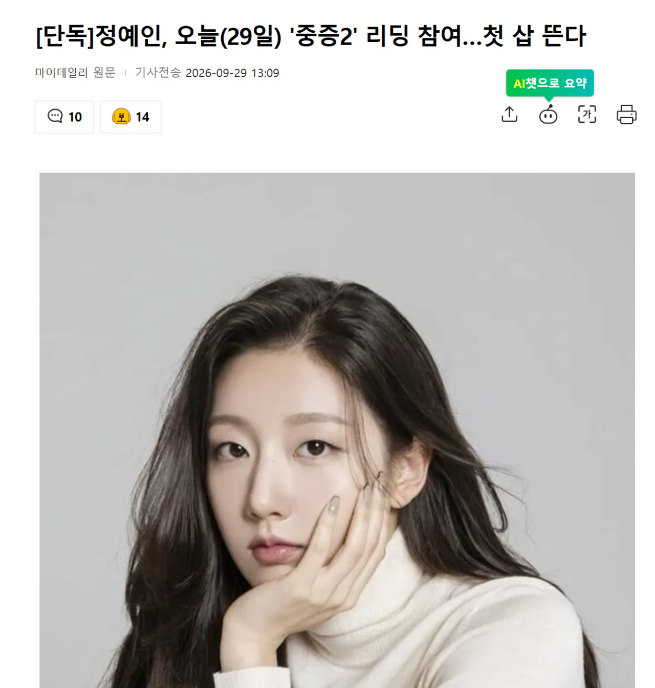

https://news.nate.com/view/20260929n17501
이날의 관심사는 정예인이다. 첫 시즌에서 활약했지만 증조부가 친일파였던 사실이 알려지며 하차한 하영을 대신해 투입된 것이다. 하영이 연기한 천장미 역할은 많은 배우들이 오디션을 치렀고 결국 정예인으로 최종 확정됐다. 이미 내정이 됐고 정예인 소속사 써브라임에서도 인지하고 있었지만 '논의된 바 없다'는 입장으로 혼선을 빚었다.
정예인은 2014년 러블리즈로 데뷔, 웹드라마 '더 블루씨' tvN '크리미널 마인드' 티빙·왓챠 '인싸가 되고 싶은 나라' 드라마박스 '수수께끼 재벌딸' 네이버 클립 '자판귀' 등에 출연했지만 롱폼의 화제작 주연은 처음이다.
'중증외상센터'는 전장을 누비던 천재 외과 전문의가 유명무실한 중증외상팀을 심폐 소생하기 위해 부임하면서 벌어지는 통쾌한 이야기. 내달부터 시즌2와 시즌3를 동시 촬영한다.
시즌1 때 하영이 맡았던 천장미(조폭) 역할
하영이 증조부 친일파 이슈로 하차하면서 정예인 투입
정예인 연기 잘해?